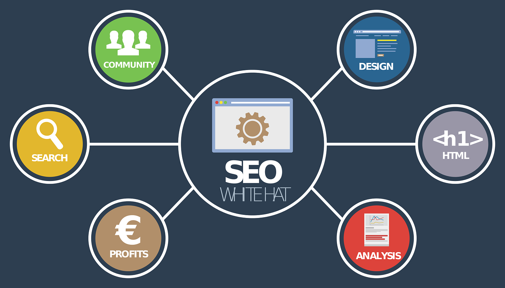

What is Web Marketing ?
• Web marketing is the process of using the Internet to market your business. It includes the use of social media, search engines, blogging, videos, and email.
• Promoting a business takes effort. There are a variety of ways to do it. Traditional advertising in newspapers, on the radio and television, direct mail, and billboards has been around for decades.
• Web marketing takes your message to the big wide web. With tons of people using the internet every day, there are huge opportunities to get your product or service in front of people who need or want it.

Strategies for Marketing Your Business Online
1. Invest in Web Design
We don’t often think about web design as a marketing tactic, but it influences the amount of time and attention a user will spend on your page. Your website is the center of all your digital marketing efforts, so if your page is not clean, easy to read, and interesting, it won’t matter how much time you put into strategy development – you’re still going to lose customers. If you don't have the design skills to do it yourself, then it's worth hiring someone to create a website that is modern, attention-grabbing, and mobile friendly.
2. Use Search Engine Marketing and Optimization
Search engine marketing and optimization are part of what helps make your business appear higher on a list of search engine results. With a strong SEO strategy, your company website will become associated with the keywords used to find your services. This increases your chances of being the company an individual chooses to work with after searching online.
3. Affiliate and Associate Programs
With an affiliate program, people who believe in your company can share your information and grow your market on a commission-based platform. An affiliate or associate program doesn’t make sense for every business. However, if you do use these, you can quickly see your marketing efforts improve without needing to do much yourself.
4. Hire a Coach or Consultant
If you’re not an expert in digital and internet marketing, ask someone who is. There are hundreds of internet marketing coaches and consultants available to you, many of whom can give you a consultation about what you should change to see success. For small business owners who need to focus on other business systems, a coach or consultant can be extremely helpful.
5. Use Email Marketing
It isn’t enough to just send out emails. You will want to consider various email lists that cater to the specific needs of each individual and can present a personalized approach to your campaigns. Take a hard and clear look at the purchasing habits of your customers and use that information to develop your strategy.
6. Build an Opt-In Email List
An opt-in email list allows customers to come to you and sign up to receive email correspondence. This allows you to connect with potential customers and current clients.
7. Get Into Articles or News Stories
Work with a public relations professional to get your business into articles and news stories on topics related to what you do. It will not only help establish you as a trusted expert, but it will introduce your business to an even broader base of people. You can also sign up for free services that connect you with writers looking for sources, such as Help a Reporter Out.
8. Write Online Press Releases
When you use online press releases, you’re getting your information out there in a formal setting. This allows newspapers, blogs, or other media sources to see your information and write posts about your company without you needing to put in the effort to connect and claim a story.
9. Hold Contests and Giveaways
People love contests and giveaways. Anytime you can encourage promotion from your customers in exchange for a free product or service, you will usually see a surge in purchases or connections.
10. Maintain a Blog
Your blog should be used for a number of reasons, including allowing you to consistently post new keywords and optimize your search engine strategy. More than that, your blog becomes somewhere you can offer advice, share bits of information, and really connect with your customers. A lasting relationship begins with trust, and your blog is a great way to build that.
.jpg)
For more information, feel free to contact us.